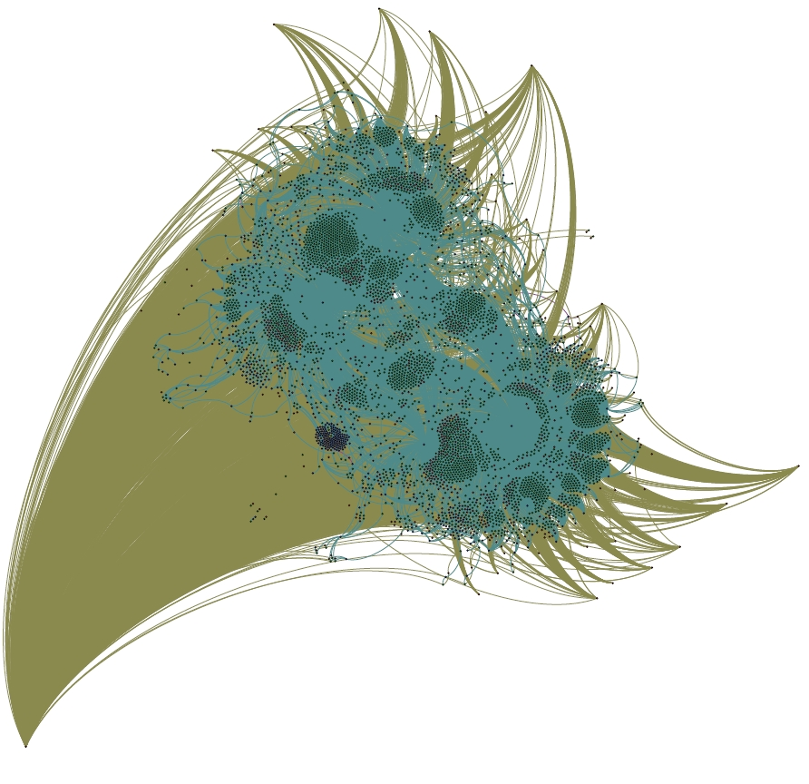

The network visualization tool Gephi, which recently received recognition from Oracle as an exemplary Java project, provides an enormously powerful toolbox for visualizing and analyzing network data such as the kind found in the new Mapping the Republic of Letters database. Like any powerful tool, Gephi provides such arresting visuals that it makes me feel like I need to spend the rest of the year figuring out just what, exactly those visuals are. Force-based algorithms arrange graph data by assigning attractive and repulsive forces to a node based on the number and quality of its connections. The result can be rather stunning.

A portrait of Benjamin Franklin, as a network of letters, locations and recipients. He resembles Cthulhu more than usual in this method.
The image above is a large (but not complete) sample of Benjamin Franklin’s correspondence from the Mapping the Republic of Letters database. Franklin himself exists at the bottom left, and the more popular recipients of his letters occupy a more distant orbit around the teal cluster that differentiates the various locations where letters were sent to and from. The three major locational clusters, surrounded by small islands of letters oriented to exist between the locations and actors involved in the letter, are Philadelphia, London and Passy. Smaller locational clusters nest around these and various less common recipients of Franklin’s letters are buffeted to and fro on mathematical eddies, sometimes nested between larger authorities and sometimes flung far from the locational centers. I’m only just getting started with Gephi and serious graph visualization, and cannot do more than a rough interpretation of the results of this particular algorithm. I will note that the process to get this 5000 node and 30000 edge Franklin network to the shape above required 3GB of RAM and a dedicated processor and 12 hours. I’m currently running the much larger Voltaire network and in 18 hours it has only just begun to take shape.